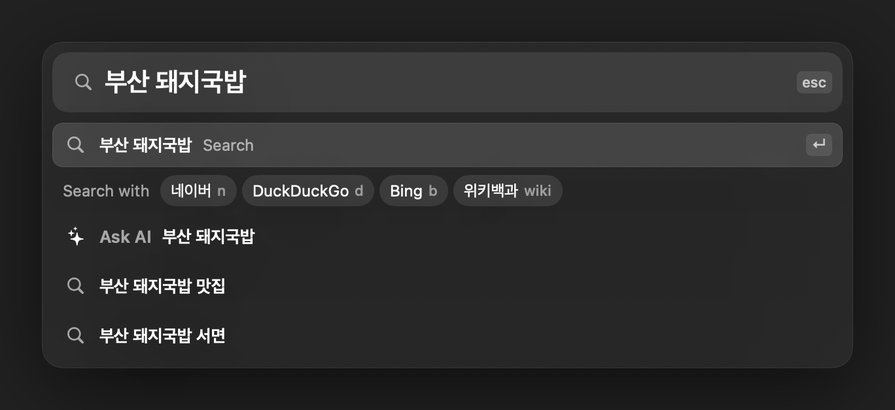
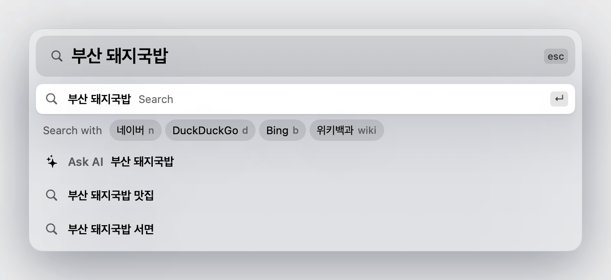

주소창(⌘L·⌘T)에 검색어를 치면 첫 줄 아래에 다른 검색엔진 칩이 보여요. 누르거나 ⌘1~⌘4를 누르면 그 엔진으로 이번 한 번만 검색해요. 기본 검색엔진은 그대로예요.
- 칩 옆 작은 글자는 키워드예요. n 돼지국밥처럼 앞에 붙여 쳐도 같은 엔진으로 검색해요. 기본 엔진 네 개에도 키워드(g·n·d·b)를 새로 넣어요.
- 설정에서 직접 추가한 검색엔진(그림의 위키백과)도 함께 나와요.
- 테스트 화면이라 "Search with"·"Search"가 영어로 나왔는데, 앱에서는 한국어로 나와요.

